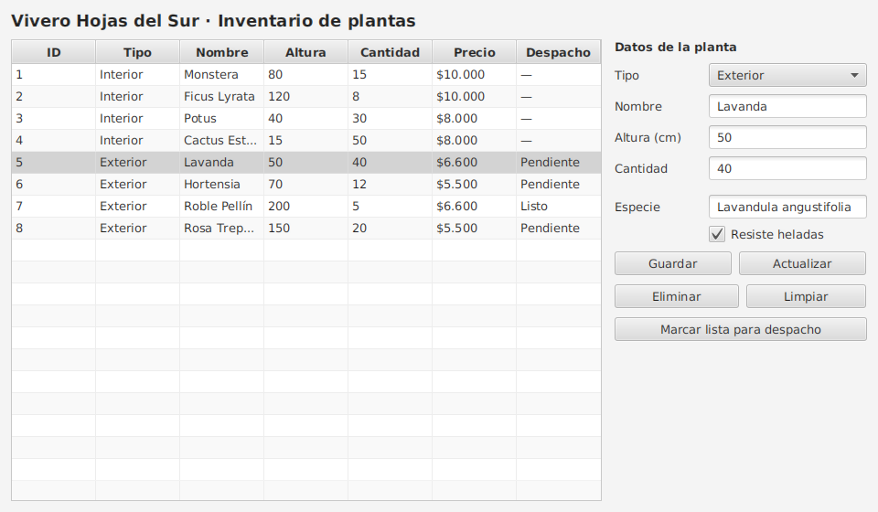

Un caso en 7 pasos: SQL → JDBC → DAO → JavaFX
Java 21MySQL 8JDBCJavaFX 21
github.com/donkiwicl/poo_vivero_bd
¿Qué pasa cuando el vivero crece?
interiores.json y exteriores.jsonplanta y proveedorSELECT … WHERE para buscarCHECK protegen los datosEl modelo (Planta, PlantaInterior, PlantaExterior) casi no cambia: solo gana un id.
Cada carpeta paso-NN-… es un proyecto Maven completo y ejecutable, con su README.
Cada paso parte del código del anterior y deja una pregunta que el siguiente responde.
CREATE TABLE planta ( id INT PRIMARY KEY AUTO_INCREMENT, tipo VARCHAR(10) NOT NULL, nombre VARCHAR(100) NOT NULL, altura_cm INT NOT NULL, cantidad INT NOT NULL, proveedor_id INT, CHECK (altura_cm BETWEEN 1 AND 300), FOREIGN KEY (proveedor_id) REFERENCES proveedor (id) );
PRIMARY KEY: identifica cada filaFOREIGN KEY: une tablasCHECK: las reglas del modelo, también en la baseJOIN, GROUP BY, HAVING para consultar⚠ UPDATE y DELETE siempre con WHERE.
DriverManager → Driver (Connector/J) → servidor
// jdbc : motor :// host : puerto / base String URL = "jdbc:mysql://localhost:3306/vivero"; try (Connection con = DriverManager.getConnection(URL, USER, PASS)) { // usar la conexión } catch (SQLException e) { System.err.println(e.getMessage()); }
Cierra Connection, Statement y ResultSet solo, incluso si hay una excepción.
Olvidarlo = fuga de conexiones.
# db.properties db.url=jdbc:mysql://localhost:3306/vivero db.usuario=root db.clave=1234 // DatabaseConnection public static Connection getConnection() throws SQLException { return DriverManager.getConnection( url, usuario, clave); }
VIVERO_DB_CLAVE| Código | Significa |
|---|---|
| 1045 | usuario/clave |
| 1049 | base no existe |
| 0 | servidor apagado |
| Sentencia | Método | Devuelve |
|---|---|---|
SELECT | executeQuery() | ResultSet (filas) |
INSERT · UPDATE · DELETE | executeUpdate() | int (filas afectadas) |
while (rs.next()) { // una fila por vuelta plantas.add(PlantaMapper.mapear(rs)); // fila → objeto del modelo }
El campo tipo decide si se crea una PlantaInterior o una PlantaExterior: el polimorfismo se reconstruye desde la base.
"… WHERE nombre = '" + nombre + "'" nombre = ' OR '1'='1 → WHERE nombre = '' OR '1'='1' → 8 filas: ¡todo el inventario!
ps = con.prepareStatement( "… WHERE nombre = ?"); ps.setString(1, nombre); → busca el texto literal → 0 filas
Además: RETURN_GENERATED_KEYS para recuperar el id, addBatch() y transacciones.
con.setAutoCommit(false); // inicia la transacción try (PreparedStatement ps = con.prepareStatement(SQL_INSERT)) { for (PlantaInterior p : plantas) { ps.setString(1, p.getNombre()); ps.setInt(2, p.getAlturaCm()); ps.setInt(3, p.getCantidad()); ps.setDouble(4, p.getVolumenMacetaLitros()); ps.addBatch(); } ps.executeBatch(); con.commit(); // confirma todo junto } catch (SQLException e) { con.rollback(); // algo falló: se deshace todo throw e; }
java.sqlPersistenciaException en vez de printStackTrace(): el error sube hasta la interfazpublic interface PlantaDao { List<Planta> listarTodas(); Optional<Planta> buscarPorId(int id); List<Planta> buscarPorNombre(String n); void insertar(Planta p); boolean actualizar(Planta p); boolean eliminar(int id); }
// producción new PlantaRepository( new PlantaDaoMySql()); // pruebas, sin base de datos new PlantaRepository( new PlantaDaoMemoria());
¿Qué habría que escribir para volver a guardar en JSON? Solo otra implementación.

tabla.setItems(datos); datos.setAll( repositorio.listar());
IllegalArgumentException → dato inválidoPersistenciaException → falló la base| Síntoma | Revisa primero |
|---|---|
| No conecta | MySQL encendido · URL · usuario · clave · dependencia en pom.xml |
| Tabla JavaFX vacía | cargarDatos() · consulta · nombres de columnas |
Parameter index out of range | Cantidad de ? = cantidad de setXxx |
| Actualizar no cambia nada | El id viene de la fila seleccionada |
| Conexiones abiertas | try-with-resources en todo acceso |
Sin conexión, o con errores SQL sin controlar, el CRUD de la EP3 obtiene la nota mínima.
| EP2 · archivos | EA3 · base de datos | |
|---|---|---|
| Datos en | JSON | Tablas MySQL |
| Conoce el formato | GsonPlantaDao | PlantaDaoMySql |
| Buscar | Recorrer listas | SELECT … WHERE |
| Integridad | Modelo | Modelo y base |
| Ve el controlador | PlantaRepository — igual en ambos | |
github.com/donkiwicl/poo_vivero_bd
Cada paso: README.md con explicación, salida esperada y preguntas para pensar.